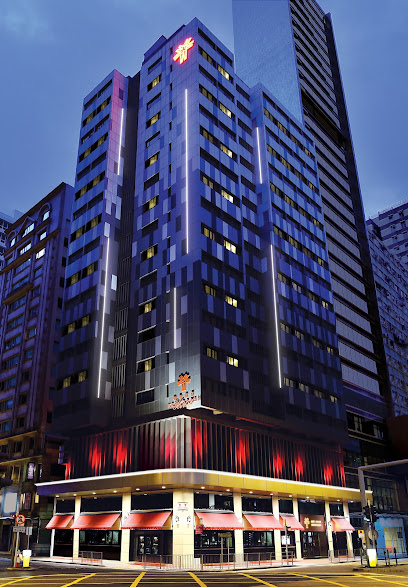

首頁
Day 1
Day 2
Day 3
Day 4
HONG KONG
4 Days Trip
航班
去: 長榮航空 BR0845 (09:15-10:55)
回: 長榮航空 BR0850 (19:30-21:05)
行前注意事項
簽證：
記得辦理「預辦入境登記」或攜帶有效台胞證。
電壓：
220V (英式三腳插頭)，需準備轉接頭。
網路：
確認漫遊已開通或更換 Sim 卡。
交通：
準備好八達通卡 (Octopus)。
衣著：
室內冷氣通常很強，建議帶薄外套。
住宿
灣仔睿景酒店
地圖

☝點擊上方分頁查看每日詳細行程☝
Day 1: 港島風情
Day 2: 經典中環
Day 3: 九龍潮流
Day 4: 滿載而歸
方案 A: 購物
方案 B: 大佛
10:00
景點名稱
行程介紹
...
Google Maps